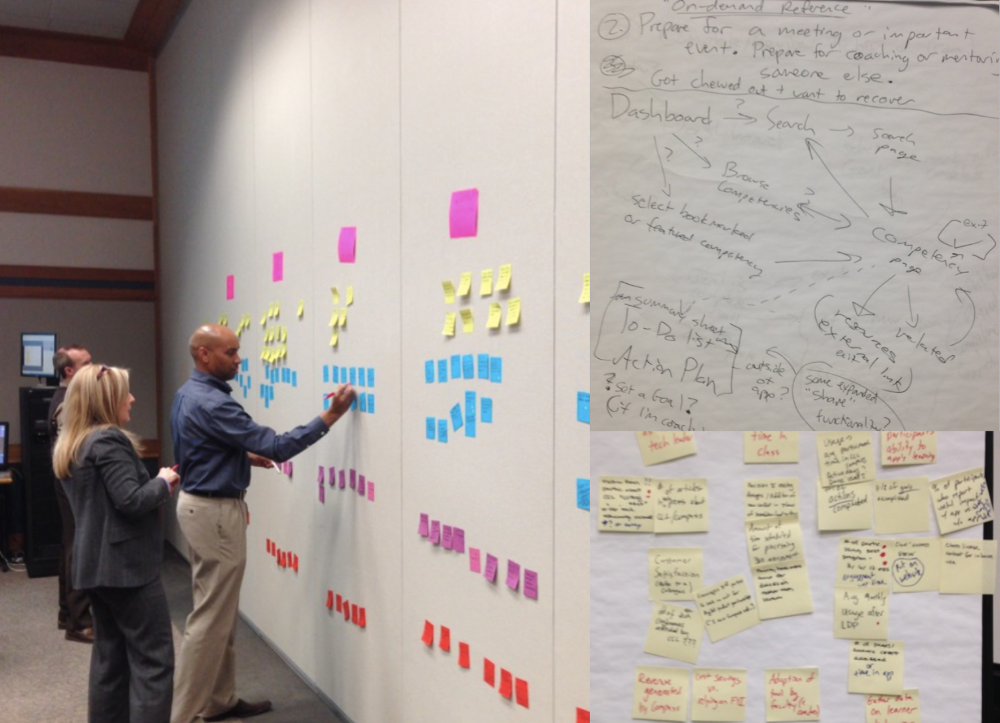

CCL Compass
Web Application to organize Leadership Development Data And Set Goals
Purpose UX led a two-day workshop at CCL’s offices with key stakeholders to develop insights about how to improve the Compass experience.
With those insights, we audited the existing app and identified the key usability issues. With those major issues in hand, we overhauled the interface, designed new data displays, and integrated the goal-setting tool throughout the experience.

Services
Product Definition Workshop
Data Displays
User Interface Design
Web Application
Before
Data was presented as purely numerical, which was not engaging and made it hard to see patterns.
Subrows had different headings, which led to confusion.
After
For reviewing assessment data, we replaced the table with a bar graph with a sort feature so users could focus on the data that mattered most to them. We also separated the organization’s “importance” scores to a separate tab.
Before
Goal-setting was originally a five-step process that was separated from the other content in the app.
This was frustrating for users, both because of the number of clicks, but also because of the lack of context.
After
We integrated goals throughout the app via this dynamic panel. We also streamlined goal-setting to a single screen by removing little-used steps and consolidating input fields.